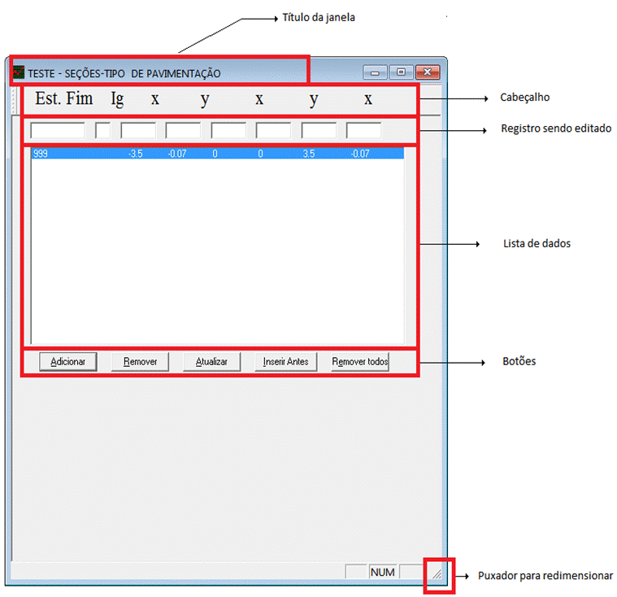

Generalidades
Generalidades:

As tarefas de digitação são as tarefas usadas para inserir dados no programa Vias Urbanas & Estradas. Todas as entradas de dados são feitas através destas tarefas e todas tem um comportamento similar. No topo da janela há um registro de edição com os campos onde devem ser digitados os dados. Abaixo há uma lista dos dados já existentes. Ao clicar em um registro existente este registro vai para a área de edição podendo ser alterado ou removido. Este registro fica em azul na lista de dados. Para alterá-lo faça as alterações e então pressione Atualizar. Para removê-lo pressione Remover . Para inserir um novo registro clique no botão Limpar ou numa área em branco da lista de registros, os campos do registro atual serão apagados. Insira os dados do novo registro e pressione a tecla Inserir, o registro sendo editado será inserido no último lugar da lista. Para cancelar as edições atuais pressione Cancelar. Para uma melhor visualização dos dados vá ao canto inferior esquerdo da janela e puxe o canto da janela com o botão esquerdo do mouse pressionado. Isso possibilitará redimensionar a janela, de modo que toda a lista de dados seja visualizada. Posteriormente pode-se pressionar o botão Centralizadas na barra de tarefas para centralizar a janela. O formato de visualização será salvo e nas próximas vezes que esta tarefa for chamada ele já estará com esta nova forma. Para efeito de cálculos, a ordem em que os registros estão na lista de registro não importa, quando forem usados ele serão lidos na ordem correta, mas caso deseje visualizar a lista ordenada, pressione o botão Ordenar e a lista será ordenada em ordem sequencial da primeira estaca dos registros.
PRINCIPAIS ÁREAS:
• TÍTULO DA JANELA:
Indica qual tarefa está sendo editada.
· REGISTRO SENDO EDITADO:
Contém o registro que esta sendo editado. Para alterar um registro é preciso que ele seja movido para esta área, o que pode ser feito clicando-se no registro que se deseja editar. Parq inserir um novo registro clique no botão Limpar, entre com os dados e então pressione o botão Inserir.
· LISTA DE DADOS:
Contém todos os registros da tarefa que está sendo editada.
· BOTÕES:
Contém os botões que realizam ações na lista de tarefas e/ou no registro atual, que podem ser:
• Inserir:
Insere o registro atual na lista de registros. O registro é inserido na última posição da lista.
• Remover:
Remove o registro atual da lista de taludes.
• Gravar:
Grava a lista de registros no respectivo arquivo. Antes de gravar surge um diálogo solicitando a confirmação da operação.
• Ordenar:
Ordena a lista em ordem crescente da primeira estaca.
• Atualizar:
Insere o registro atual com as alterações feitas na lista de registros. O registro atual é inserido na mesma posição onde estava, com as alterações feitas na edição.
• Ajuda:
Este botão apresenta a tela de ajuda (esta tela).
• OK:
Fecha o diálogo. Caso haja alterações pendentes um diálogo surgirá solicitando a gravação das últimas alterações.
Direitos Autorais © (2010 - 2015) - Boole Software LTDA - Todos os direitos Reservados.
Created with the Personal Edition of HelpNDoc: Easily create EPub books